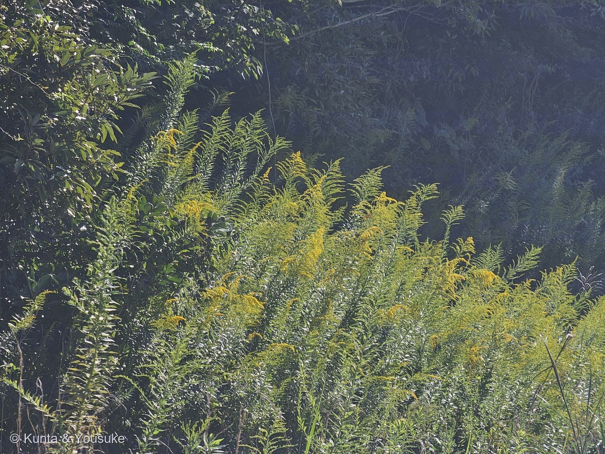
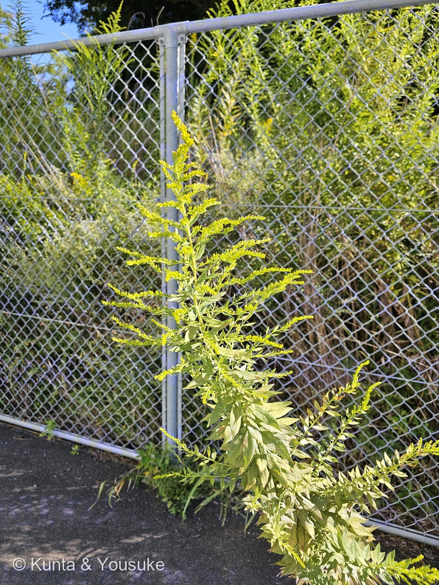
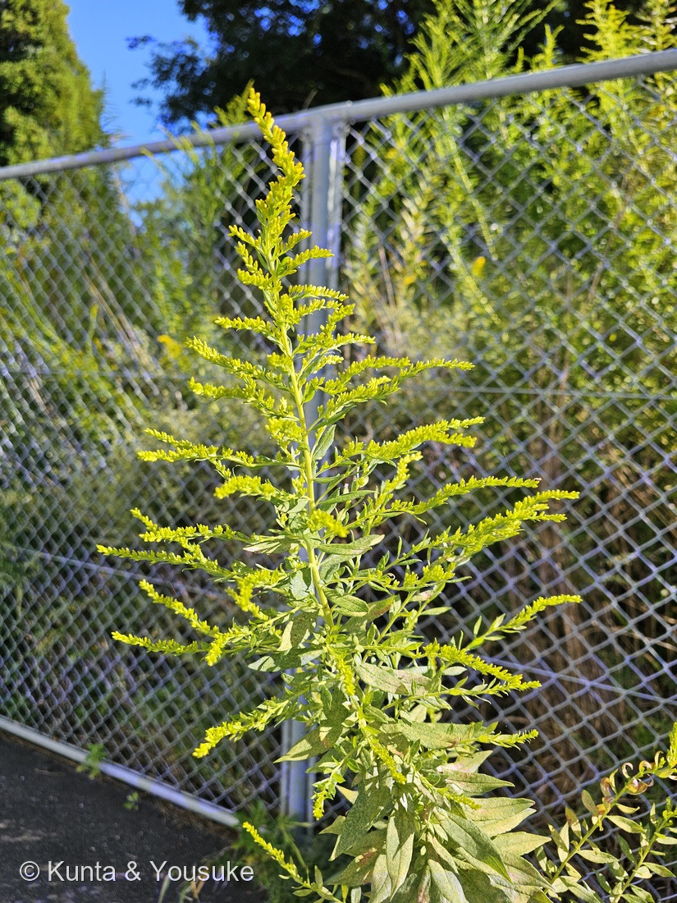
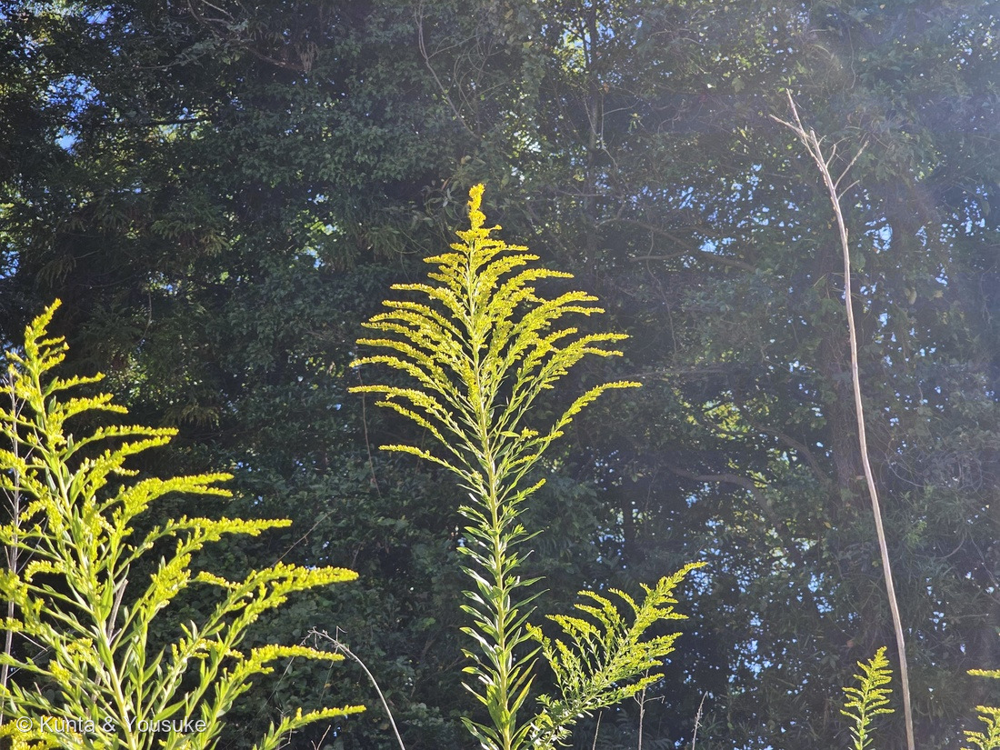

地図を読み込んでいるよ…
🔍 写真も地図も、押しているあいだ拡大して見られるよ（スマホは指を置いてすこし待ってね）。
🌍 の地図＝この子がもともと自生している場所を緑に。北アメリカ（カナダ・アメリカ合衆国の広い範囲と、メキシコ北部）。日本へは明治の中ごろから第一次世界大戦前に観賞用・蜜源として入り、第二次世界大戦のあとに全国へ広がった帰化植物。くわしくは下の地図の説明を見てね。
⭐北アメリカの子だよ＝英語版Wikipediaは「カナダ・アメリカ合衆国の広い範囲と、メキシコ北部」とする。⚠メキシコはぜんぶ緑になっているけれど、ほんとうは北部だけ。⚠日本は塗っていない＝明治の中ごろから第一次世界大戦前に観賞用・蜜源として入り、戦後に全国へ広がった帰化植物（世界大百科事典・ブリタニカ・広報ちがさき）。⭐081メマツヨイグサ・098ブタクサと同じ「北アメリカから来た子」。⭐⭐そして原産地の北アメリカでは、逆に日本のススキが外来種として広がっている（広報ちがさき）。
⚠ 地図は国（日本と中国だけ県・省）までしか塗れないから、ほんとうの分布より広く見えていることがあるよ。地図はだいたいの場所。正確なところは、上の文を見てね。
セイタカアワダチソウ（背高泡立草）
Solidago altissima L.
別名 · 代萩（だいはぎ）・閉山草（へいざんそう）／英名 tall goldenrod・late goldenrod
キク科 · Asteraceae（アキノキリンソウ属 Solidago · キク目 Asterales）── ⭐098 ブタクサ・129 ヨモギ・337 コスモスと同じキク科／⭐⭐アキノキリンソウ属ははじめて
燻太さんの言葉「黄金色の花序と、緑の長い茎。黄金色の杖そのものだね。確か、英語名もそんな名前だったような気がする。」── ⭐英名 goldenrod＝「黄金の杖」＝大正解だった
⭐⭐⭐⭐⭐ 名前と学名の由来 ── 「黄金の杖」と「傷をなおす草」
- ⭐⭐⭐⭐ 燻太さんの言葉＝「黄金色の花序と、緑の長い茎。黄金色の杖そのものだね。確か、英語名もそんな名前だったような気がする。」
- ⭐⭐⭐⭐ そのとおりだったよ。英名 goldenrod＝golden（黄金の）＋ rod（杖・棒）。⭐もとはラテン語の virga（杖）と aurea（黄金の）（Putnam Park Wildflowers＝ウィスコンシン大学オークレア校）。⭐⭐この子の英名は tall goldenrod（背の高いゴールデンロッド）・late goldenrod（おそく咲くゴールデンロッド）（英語版Wikipedia）。
- ⭐⭐⭐ 属名 Solidago＝ラテン語の solido「完全にする・傷をなおす・強くする」から。⭐薬草として効くと考えられていたことにちなむ（Putnam Park Wildflowers）。⚠ラテン語のもとの形は出典によって少しちがう（solidus＋ago「完全に＋する」とも）けれど、「なおす」という意味は同じ。
- ⭐⭐⭐ 種小名 altissima＝「いちばん背の高い」（Putnam Park Wildflowers）。⭐和名の「背高」と、学名の「いちばん高い」が、同じことを言っている。
- ⭐⭐⭐ 和名「背高泡立草」＝背の高い「アワダチソウ」という意味（世界大百科事典）。⭐「アワダチソウ（泡立草）」は、日本にもともといる親戚のアキノキリンソウの別名（日本語版Wikipedia）。⚠なぜ「泡立ち」なのかは、読んだ出典には書いていなかったので、ぼくは決めないでおくね。
- ⭐ 別名「代萩（だいはぎ）」＝ハギの代わりに、秋の切り花に使われたから（茅ヶ崎市の広報）。
⭐⭐⭐ この植物のこと ── 北アメリカから来た、秋の黄色
- ⭐⭐⭐ ふるさとは北アメリカ＝カナダ・アメリカ合衆国の広い範囲と、メキシコ北部（英語版Wikipedia）。
- ⭐⭐⭐ 日本へは、観賞用や、ミツバチの蜜をとるための花として入ってきた（茅ヶ崎市の広報）。⭐いつ来たかは出典で少しちがう＝「明治の終わりに西日本へ」（ブリタニカ）・「第一次世界大戦の前に観賞用として」（世界大百科事典）。⭐⭐どちらも、第二次世界大戦のあとに京阪神や九州北部から一気に広がったと書いている（ブリタニカは「約20年で九州から北海道まで」）。
- ⭐⭐ 北九州の炭鉱が次々に閉山していったころに急に広がったので、「閉山草」とも呼ばれた（世界大百科事典）。
- ⭐⭐⭐ 高さは1〜2.5m（奄美大島の外来植物防除優先度リスト）。地下茎で横に広がって、同じ株から何本も立つので、大きな群れになる（同）。⭐写真①の、斜面いちめんの群落がそれだね。
- ⭐⭐⭐ まわりの植物の芽ばえや育ちをじゃまする物質を、根や地下茎から出す（アレロパシー）（茅ヶ崎市の広報・奄美大島のリスト）。
- ⭐⭐ いまは、環境省の「生態系被害防止外来種リスト」で「重点対策外来種」（奄美大島のリスト）。
- ⭐⭐⭐ でも、ずっと強いままではないらしい＝「近年は、自分の出すアレロパシー物質の影響や、サビ病・アブラムシのせいで勢いが衰え、背も低くなってきたといわれる」（茅ヶ崎市の広報）。⭐⭐そして、原産地の北アメリカでは逆に、日本のススキが外来種として広がって、セイタカアワダチソウの生える場所をおびやかしている（同）。⭐海をはさんで、入れかわっているんだね。
⚠ 同定について ── まだつぼみの10月8日
- ⭐⭐⭐⭐ セイタカアワダチソウ Solidago altissima とした。⭐決め手は4つ＝①背の高い1本の茎の先に、大きな円錐形の花序（写真②③④）②花序の枝の上がわだけに、小さな頭花がずらりと並ぶ（写真③）③細い披針形の葉が、茎に密に互生（写真②④＝世界大百科事典「密に互生し、披針形で先端がとがる」）④10月8日に、まだつぼみが多い＝花期は10〜11月（世界大百科事典・日本大百科全書）。
- ⭐⭐⭐ 落とした相手＝オオアワダチソウ＝花期が7〜9月と早く、茎や葉にほとんど毛がない（日本大百科全書）・「茎がほぼ無毛で白っぽい」「葉が無毛でざらつかない」「花序がややまばらで頭花が大きい」（林野庁北海道森林管理局）。⭐10月にやっとつぼみ、という時期が、いちばん効いた手がかり。
- ⚠⚠ 茎の毛は、写真では見えなかった＝セイタカアワダチソウは「全体に短い毛があり、ざらつく」（世界大百科事典・マイペディア）。⏳さわって確かめる宿題にしたよ。
- ⭐ 落とした相手＝アキノキリンソウ＝高さ70〜80cmほど（日本語版Wikipedia）＝フェンスより背の高いこの子とはちがう。
⭐⭐⭐⭐ 燻太さんの「この見た目でも、キク科らしい」── 小さな黄色の一つぶが、ひとつの「花の頭」
- ⭐ 燻太さんの言葉＝「この子はこの見た目でも、キク科らしいから、今度お花をじっくり観察しよう。」
- ⭐⭐⭐⭐ 写真③の小さな黄色いつぶ一つひとつが、ヒマワリやタンポポと同じ「頭花（花の頭）」＝まんなかに筒の形の花、まわりに花びらのような舌状花が1列ならぶ（世界大百科事典）。⭐⭐頭花は直径数mmしかない（ブリタニカ）＝キク科の「花の頭」を、うんと小さくして、何百も枝に並べたのがこの子。
- ⭐⭐⭐ 英語版Wikipediaは「1株で1500もの頭花をつけることがある」と書いている。
- ⏳⭐⭐⭐ 10月8日は、まだほとんどがつぼみ（写真③）。⭐満開になったら、ルーペで1つの頭花をのぞくと、まわりの小さな舌状花が見えるはずだよ。
⭐⭐⭐⭐⭐ 花粉症の「えん罪」── 098 ブタクサとの関係
- ⭐⭐⭐⭐ セイタカアワダチソウは、一時、秋の花粉症の原因だといわれたことがある。⭐⭐でも、この子は虫に花粉を運んでもらう「虫媒花」で、花粉が風で飛ぶ「風媒花」ではないので、関係はうすいとされている（茅ヶ崎市の広報・世界大百科事典・日本大百科全書）。
- ⭐⭐⭐⭐ ほんとうに秋の花粉症を起こす代表は、図鑑の098 ブタクサや129 ヨモギ＝同じキク科なのに、目立つ花びらを持たない風媒花（098のページ）。⭐⭐黄色く目立つから疑われた子と、地味だから見のがされた子＝目立つ花は「虫を呼ぶため」だから、むしろ花粉を風にまかせていないしるし（⚠ぼくの読み）。
- ⭐⭐ 晩秋の蜜源として、養蜂家に利用されている（世界大百科事典）＝ミツバチがよく来る花。
⭐⭐⭐ 葉の白いかすり模様 ── あとから来た北アメリカの虫？
- ⭐⭐⭐ 写真②③の下のほうの葉は、緑の上に白い点々がかすりのように散っている。
- ⭐⭐⭐ 宮城県病害虫防除所は、アワダチソウグンバイという虫が吸うと「葉に白いかすり状の脱色斑が発生し、葉裏には黒い粘液状の排泄物が付着して汚れる」と書いている。⭐⭐この虫も北アメリカ原産で、日本では2000年に兵庫県のセイタカアワダチソウで初めて見つかり、西日本から東日本へ広がった（同）。
- ⚠⚠ でも、写真には虫そのものも、葉の裏も写っていない＝ほかの原因で白くなることもあるかもしれない（⚠ぼくの読み）。⭐だから「たぶん」で止めて、虫のことは大河に渡すね。⏳葉の裏をのぞく宿題にしたよ。
- ⭐⭐ 「天敵がいなかったから広がった」といわれる子に、ふるさとの虫が、ずっとあとになって追いついてきた＝⭐茅ヶ崎市の広報の「近年は勢いが衰えた」と合わせると、おもしろいね（⚠この虫が衰えの原因かどうかは、出典は言っていない）。
⏳ 宿題 ── 5つ
- ⏳⭐⭐⭐ ①満開になったら、花の頭に寄って撮る＝まんなかの筒状花と、まわりに1列の舌状花（燻太さんの約束）。
- ⏳⭐⭐⭐ ②茎と葉をそっとさわって、ざらつくか＝オオアワダチソウを最後に落とす。
- ⏳⭐⭐ ③葉の裏をのぞいて、小さな虫や黒い点があるか＝白いかすり模様の正体。
- ⏳⭐ ④11月ごろ、綿毛のついた実。
- ⏳⭐ ⑤おまけのアキノキリンソウ＝背の高さと、花の頭の大きさをくらべる。
参考：コトバンク「セイタカアワダチソウ」（世界大百科事典＝高さ・茎は分枝せず短い毛・密に互生する披針形の葉・筒状花と1列の舌状花・花期10〜11月・第一次世界大戦前に観賞用・閉山草・花粉症は無関係・晩秋の蜜源・背の高い泡立草／日本大百科全書＝オオアワダチソウは毛がほとんど無く7〜9月／ブリタニカ＝明治の終わりに西日本へ・戦後20年で全国・頭花は径数mm／マイペディア＝全体にざらつく）／広報ちがさき 2017年9月1日号（茅ヶ崎市文化資料館）（観賞用・蜜源として導入・代萩・虫媒花で花粉症とは関係うすい・アレロパシー・近年は勢いが衰えた・北アメリカではススキが外来種）／奄美大島の外来植物防除優先度リスト（環境省）（高さ1〜2.5m・葉の大きさ・互生・地下茎・重点対策外来種）／林野庁北海道森林管理局（オオアワダチソウ）（オオアワダチソウとの見わけ）／Putnam Park Wildflowers「Solidago altissima」（Solidago・altissima・goldenrod の由来）／英語版Wikipedia「Solidago altissima」（英名・原産地・1株に1500の頭花）／日本語版Wikipedia「アキノキリンソウ」（別名アワダチソウ・高さ・花期・生える場所）／宮城県病害虫防除所「アワダチソウグンバイ」（白いかすり状の脱色斑・北米原産・2000年に兵庫県で初確認）